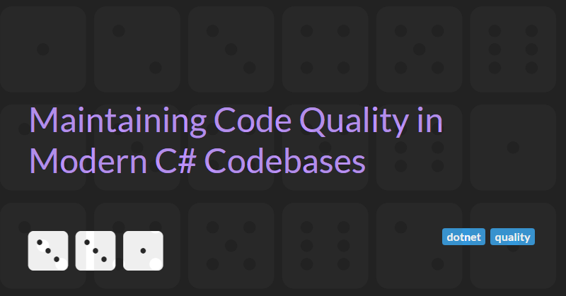

Maintaining Code Quality in Modern C# Codebases
Over the years, dotnet has supported a number of different tools to enable developers to ensure that codebases remain consistent in style and free from common design, security, and performance issues.
Maintaining code quality has always been a concern for teams building long lived C# systems. As codebases grow, contributors multiply and requirements evolve, informal conventions and ad hoc reviews are rarely sufficient. Tooling has therefore played a central role in helping teams encode standards, detect problems early, and keep quality signals visible throughout the development lifecycle.
A Brief History of Code Quality Tooling
Early versions of the dotnet ecosystem relied heavily on post compilation analysis. One of the most influential tools was FxCop, first released in the mid 2000s. FxCop analysed compiled assemblies rather than source code, checking them against a large set of Microsoft defined rules covering design guidelines, naming conventions, security practices, performance pitfalls, and correct API usage. This approach had the advantage of language independence and a deep understanding of the runtime, but it also meant feedback arrived relatively late and rule customisation was cumbersome.
Alongside FxCop, StyleCop emerged to address a different class of problems. StyleCop focused on source level consistency, enforcing rules around formatting, naming, ordering, and documentation. Its goal was not to find bugs but to ensure that all code looked and felt the same, reducing cognitive load for readers. For many teams, FxCop and StyleCop together formed the backbone of static analysis, even though they were separate tools with different configuration models and developer experiences.
As Visual Studio evolved, these tools became increasingly integrated, but they still reflected an older model of static analysis. Rules were largely fixed, extensibility was limited, and performance could suffer on large solutions. The real shift came with the introduction of the Roslyn compiler platform.
Roslyn fundamentally changed how C# code could be analysed. By exposing the compiler pipeline and syntax trees as APIs, it enabled analysers to run directly as part of compilation, both inside the IDE and on the build server, with rich semantic information available. FxCop rules were gradually ported to Roslyn, first as FxCop analysers and later consolidated into the Microsoft.CodeAnalysis.NetAnalyzers package. StyleCop also evolved, with StyleCop.Analyzers bringing familiar style rules into the Roslyn world.
Today, Roslyn analysers are the standard mechanism for static analysis in modern C# projects.
The Modern Analyser Landscape
The current analyser ecosystem is both richer and more fragmented than in the past. At its core are the built in dotnet analysers, which ship with the SDK and provide a baseline set of rules for correctness, reliability, security, performance, and maintainability. These can be configured via .editorconfig files, allowing rule severity to be tuned per project or solution.
On top of this baseline, many teams adopt additional analyser packages. StyleCop.Analyzers remains popular for enforcing consistent code style and documentation rules. There are also specialised analysers targeting particular concerns, such as threading correctness, async usage, security vulnerabilities, or misuse of specific frameworks. A search of NuGet for packages matching "Analyzer" shows over 2000 results.
Commercial tools and platforms add another layer, often combining Roslyn analysers with deeper data flow analysis, architectural rules, and historical insights. These tools typically integrate with CI pipelines and dashboards, helping teams track trends over time rather than just individual violations.
A key characteristic of modern analysis is immediacy. Developers now expect feedback as they type, with squiggles, quick fixes, and clear explanations in the IDE. This shifts static analysis from a gatekeeping activity at the end of the process to a continuous, developer centric experience.
Best Practices For Code Analysis
Modern C# code analysis is most effective when it is treated as an integral part of development rather than a bolt on quality gate. The following practices focus on making analysis actionable, sustainable, and aligned with how teams actually work.
Align Rules With Team Conventions And Workflows
Static analysis is most effective when it reinforces conventions the team already agrees on. Before enforcing style or maintainability rules, align on the underlying principles and document them. Once agreed, encode them in analyser configuration so that reviews focus on design and intent rather than formatting or preference.
Encourage developers to address analyser feedback early, using IDE diagnostics and code fixes as part of normal development. Teams that fix issues at the point of introduction tend to see far fewer CI failures and repetitive review comments.
Establish a Deliberate Rule Strategy
Not all analyser rules are equal, and enabling everything by default is rarely effective. Start by categorising rules into broad areas such as correctness, security, performance, reliability, maintainability, and style.
Correctness and security rules are usually strong candidates for higher severities, often errors, as they frequently indicate real defects or vulnerabilities. Performance and reliability rules often work well as warnings, while maintainability and style rules tend to be most effective when introduced initially as suggestions.
This prioritisation makes analyser output easier to reason about and helps developers focus on issues that genuinely matter. It also avoids the common failure mode where large numbers of low value warnings are ignored entirely.
The best place to start it to enable the built in Microsoft.CodeAnalysis.NetAnalyzers analysers and review the default rule set.
Centralise Analyser Configuration
As solutions grow, managing quality related settings on a per project basis quickly becomes unsustainable. Modern dotnet projects should centralise common configuration using Directory.Build.props and Directory.Build.targets files, which automatically apply project settings to all projects beneath their directory (see Customize your build by folder or solution documentation).
Directory.Build.props is typically used for defining global defaults such as language version, nullable context, analyser enablement, and warning behaviour. Placing these settings centrally ensures that every project starts from the same baseline and that new projects inherit the expected standards automatically.
Directory.Build.targets is useful when configuration needs to run later in the build pipeline or when composing inputs from multiple sources. One practical use is controlling how .editorconfig files are applied across the repository (see below).
Structure .editorconfig Files By Concern
Rather than relying on a single, monolithic .editorconfig file, larger codebases benefit from splitting configuration into multiple, well named files organised by concern. For example:
FileDefaults.editorconfigfor indentation, tabs versus spaces, line endings, and file level defaultsCodeStyle.editorconfigfor C# style preferences such as var usage, expression bodied members, and naming conventionsAnalyzers.editorconfigfor analyser rule severities and analyser specific options
Using the <EditorConfigFiles /> element in Directory.Build.targets, these files can be explicitly referenced and ordered. This makes configuration intent clear, avoids accidental dependence on directory structure, and allows teams to layer shared organisational defaults with solution specific rules.
Treat these files as first class assets. Keep them readable, commented, and reviewed like any other code, as changes can affect the entire solution.
Enforce Code Quality Through The Build
For analysis to be effective, important findings must be able to stop the build. Relying solely on IDE feedback is insufficient. Coding standards must also to be enforced by the CI pipeline.
Two MSBuild properties are central to build time enforcement:
<TreatWarningsAsErrors />ensures that compiler and analyser warnings fail the build unless explicitly downgraded or suppressed.<MSBuildTreatWarningsAsErrors />performs the same role forMSBuildwarnings related to project configuration and build logic.
A widely adopted best practice is to enable both properties at least for Release builds (e.g. <MSBuildTreatWarningsAsErrors Condition="'$(Configuration)' == 'Release'">true</MSBuildTreatWarningsAsErrors>). This preserves some flexibility during local development while ensuring that anything built, merged, or shipped meets a stricter quality bar. These settings are best defined centrally in Directory.Build.props and optionally scoped by configuration as shown above.
In addition, setting <EnforceCodeStyleInBuild /> to true ensures that code style rules defined in .editorconfig are evaluated during the build, not just in the IDE. This elevates style from a local preference to a shared, enforceable standard and removes ambiguity from code reviews.
Together, these settings turn analyser output into a clear contract. Rule severities are defined in .editorconfig, while the build determines how seriously those severities are treated.
Introduce And Evolve Analysis Incrementally
Applying modern analysers to an existing codebase often surfaces a large backlog of issues. Attempting to fix everything at once is rarely realistic. Instead, baseline existing violations and focus enforcement on new or modified code.
Over time, rules can be tightened, severities increased, and suppressions removed as areas of the codebase are touched. Periodically review analyser output to ensure that each rule continues to provide value, adjusting or removing those that generate noise or false positives.
Balance Automation With Human Judgement
Finally, static analysis should complement, not replace, human review. Analysers excel at consistency and well defined patterns, but they cannot fully capture architectural intent or business correctness.
By using analysers to handle routine quality concerns and enforcing them consistently through the build, teams free up code reviews to focus on design, clarity, and long term maintainability. This balance is what allows modern C# codebases to scale without sacrificing quality.
Bonus: Keep Package Management Separate But Consistent
You will probably be using Directory.Build.props and Directory.Build.targets for build and analysis settings, so why not introduce Directory.Packages.props for centralised package management at the same time?
Dependency management becomes increasingly complex as the number of projects in a solution grows. Central Package Management (CPM) allow you to manage common dependencies for many different projects all of this from a single, central location.
Although this is unrelated to static analysis configuration itself, it plays an important supporting role by ensuring that analyser packages and tooling dependencies are aligned across the solution.
Conclusion
Maintaining code quality in modern C# codebases is no longer about choosing a single tool or running a checker at the end of the build. It is about establishing a coherent system where standards are explicit, feedback is timely, and enforcement is consistent across developers, projects, and pipelines.
The evolution from FxCop and StyleCop to Roslyn based analysers has given teams far more power and flexibility, but it has also increased the importance of good configuration and discipline. Centralising settings, structuring analyser rules thoughtfully, and enforcing them through the build ensures that quality expectations are clear and non negotiable, while still allowing teams to evolve incrementally.
Perhaps most importantly, modern static analysis works best when it supports developers rather than policing them. When rules reflect shared conventions, when feedback appears early, and when automation handles the routine concerns, teams can focus their human effort where it matters most: design, intent, and long term maintainability.
Used well, today’s tooling does not just prevent problems. It helps teams scale their codebases and their practices with confidence, ensuring that quality remains a property of the system rather than a heroic effort by individuals.